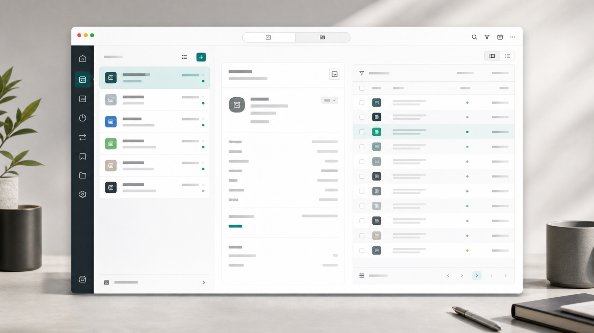
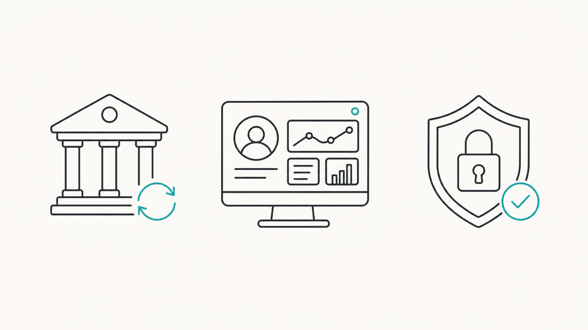
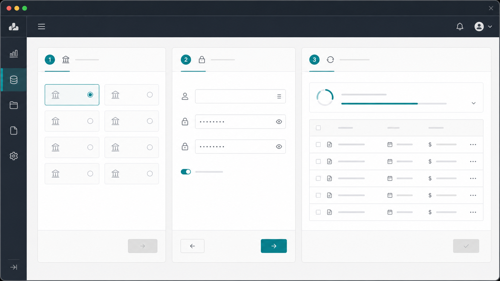
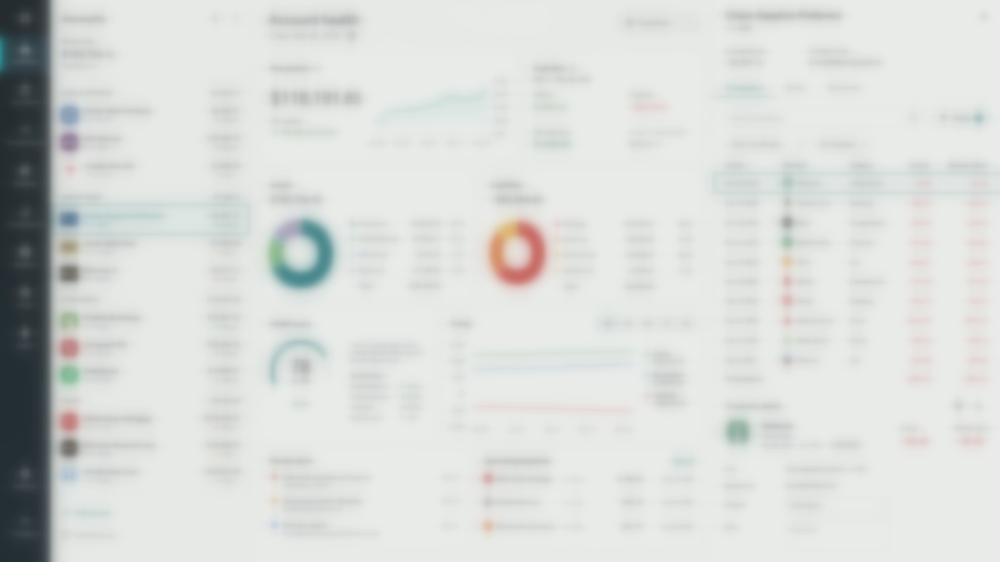

Personal finance desktop app
Bank automation with a dashboard people can trust.
OctopusBeak pulls statement activity into one reviewable workspace, organizes every account clearly, and keeps each drilldown one click away.

Fresh activity imported
Verification needed
OB knows what people need most to manage their finances.
Bank automation with simple steps
Supported most popular institutions. Designed for Taiwanese
Account-first dashboard
Overview, assets, liabilities, and transaction drilldowns are designed around the way personal finance users actually check money.
Privacy by default
Your credentials are securely saved on your desktop. No one else has your password. You own your data.

Bank automation
Fetch statements with simple steps.
The automation is ultimately simple to use. Click, type, and fetch all your bank statements in one run.

Simple steps
Choose the bank, enter what the bank asks for, and let OctopusBeak collect the statements.
One place to review
Run notes and statement rows stay together so review feels direct instead of hidden in the background.
Clear for decisions. Calm for daily use.
Compare account health at a glance, and jump from any account row into the transactions behind it.
Portfolio
| Account | Status | Balance |
|---|---|---|
| Everyday account | Imported | NT$ 284,200 |
| Brokerage account | Synced | NT$ 881,000 |
| Credit card | Needs assist | NT$ 46,900 |

Ready to try OctopusBeak?
Download the beta and start collecting bank statements into one calm workspace.
Download Beta